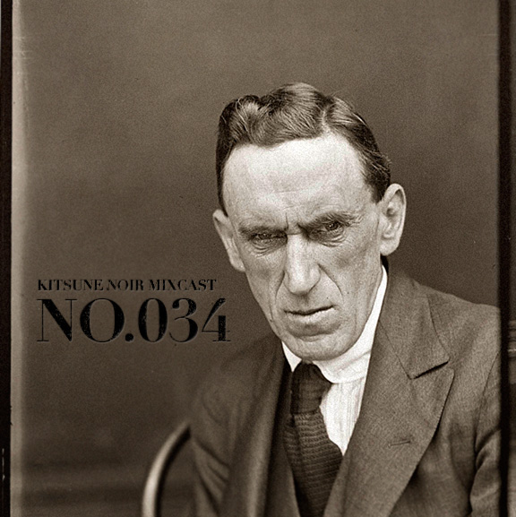

Kitsune Noir Mixcast / No. 034
This week’s awesome Kitsune Noir Mixcast all about criminals and shady characters, although “upbeat and peppy". Download No. 034.
No.034 Tracklist:
Killers by Casiotone for the Painfully Alone
The Mercy Seat by Johnny Cash
Black by Okkervil River
Of Minor Prophets And Their Prostitute Wives by Pedro The Lion
Criminals (Electronic) by Atlas Sound
An Animated Description of Mr. Maps by The Books
Pyschotic Girl by The Black Keys
Not If You Were The Last Junkie On Earth by The Dandy Warhols
Needle of Death by Bert Jansch
Horseheadedfleshwizard by Devendra Banhart
Grave Robbers by Mount Eerie
John Wayne Gacy Jr. by Sufjan Stevens
Arms of a Thief by Iron & Wine